数据集由720*1280的jpg格式图片组成，实际上就是开车在公路沿途拍下来的，因为我发现数据集的图片之间很有连贯性。其中一张如图所示：

环境
我是win10 + vs2019。记得配置opencv，用来读取图片。
起源于选修邸慧军老师的《数字图像处理》这门课程的最终课程设计项目 ：实现车道线检测
数据集
数据集由720*1280的jpg格式图片组成，实际上就是开车在公路沿途拍下来的，因为我发现数据集的图片之间很有连贯性。其中一张如图所示：
环境
我是win10 + vs2019。记得配置opencv，用来读取图片。
但在刚刚开始的时候无从下手，因为选择太多了。
比如说去噪音可以高斯滤波，均值滤波，中值滤波。
边缘提取你又可以拉普拉斯锐化，sobel算子，Robert算子，scharr算子，candy检测。
于是我干脆把这些实现一个遍，再慢慢选择好了。
于是自实现了以下算法：
以此图片为实例
转灰度图，公式是GRAY = B * 0.114 + G * 0.587 + R * 0.299。目的是为了减少运算量，简化操作。
_getGray(img) //有些函数会与opencv重名，所以我自实现的都带下划线。其实也可以自定义namespace
效果： 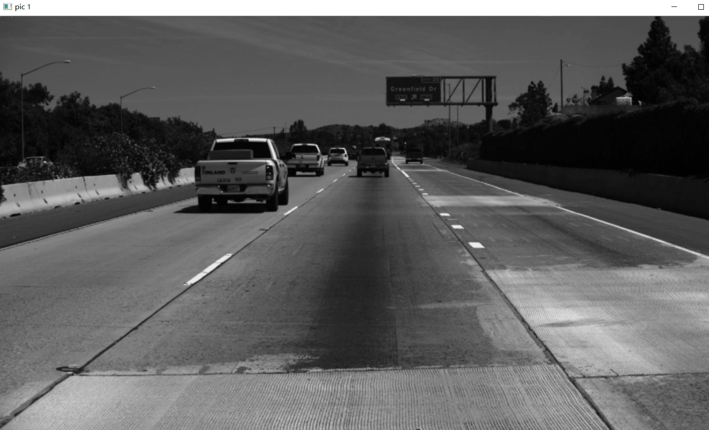
_blur(img, 3, 3); //大小是 3*3
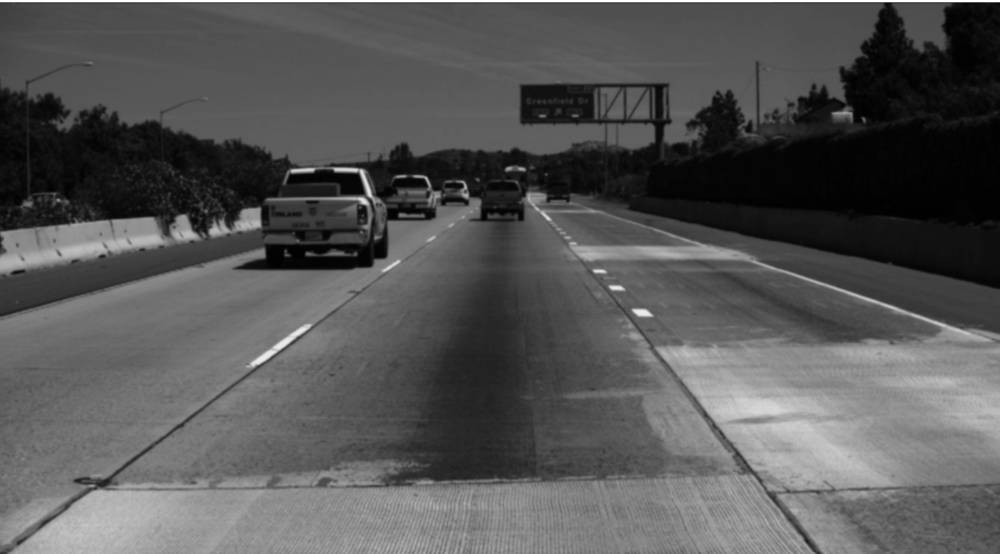
_gammaGrayReform(img, 2, 1);
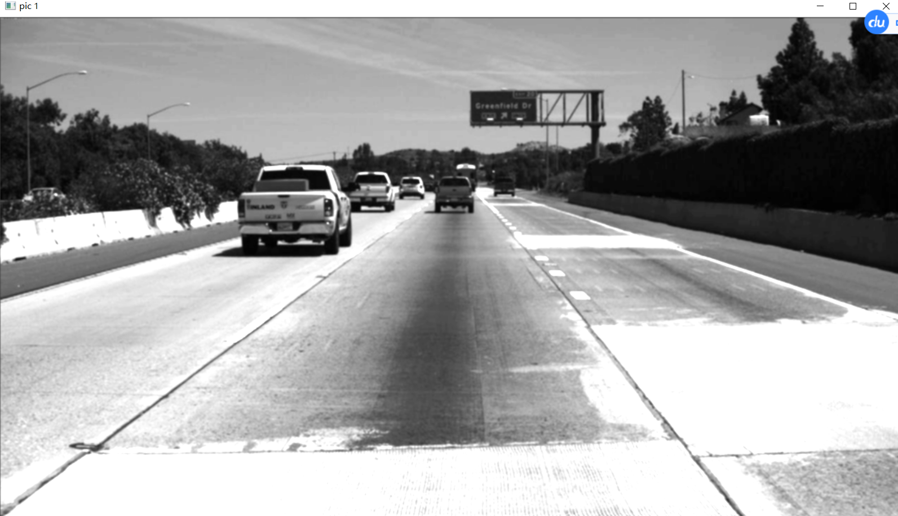
int h = img.rows; //背景处理，减少噪音与运算量
int w = img.cols;
for (int i = 0; i < h * 2 / 5; i++) {
for (int j = 0; j < w; j++) {
img.at<uchar>(i, j) = 0;
}
}
注意两侧处理要在拉普拉斯锐化之后，否则拉普拉斯会把两条直线看作边缘了
img = _lpFilter(img, 1); //拉普拉斯锐化
img = _myFilter(img, ker); //检测y方向边缘
for (int i = 0; i < h; i++) { //两侧处理，减少噪音与运算量
for (int j = 0; j < w; j++) {
if ((double)i <= -0.8 * j + (double)600 || (double)i <= 0.8 * j - (double)440) {
img.at<uchar>(i, j) = 0;
}
}
}
_lpFilter(img, 1);//1是选择核的参数，感兴趣可以阅读代码
为了感受边缘提取的效果特地去除了背景扣图这一部分 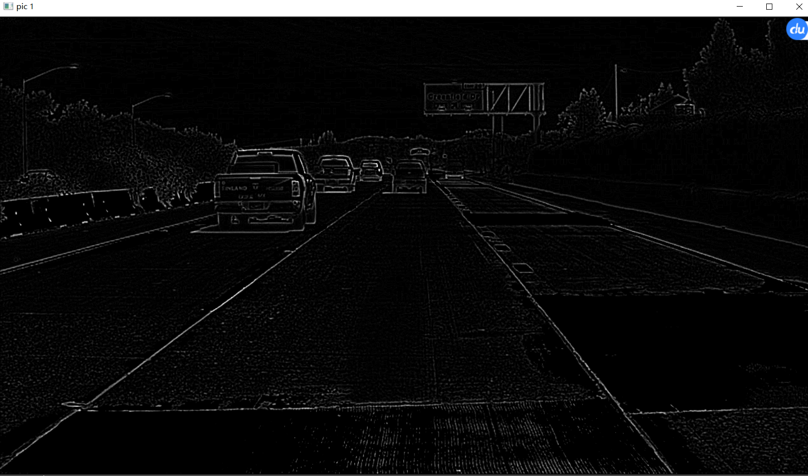
const vector<vector<double>> ker = { //用于检测y方向边缘的算子
{-1,0,1},
{-2,0,2},
{-1,0,1}
};
_myFilter(img, ker);
为了感受边缘提取的效果特地去除了背景扣图这一部分 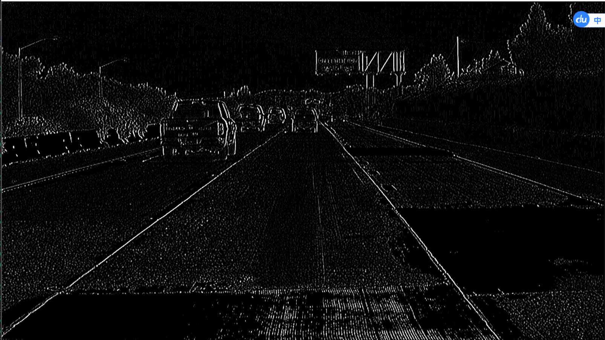
_thredShold(img, 120);
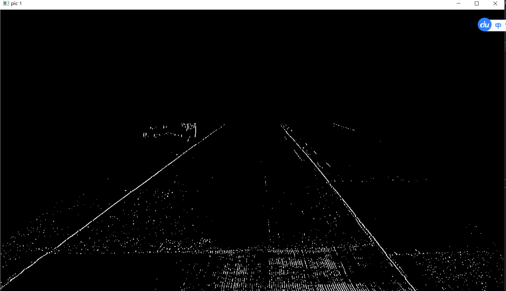
_houghDetectline(img);
其他实现就不贴代码了，这个霍夫变换实现代码值得贴出来。（这是我的粗糙版本，opencv自带的算法肯定处理得好很多很多）
可以大大优化在于： vote可以用unordered_map实现，它的增删查改操作都是O（1），但是需要自定义哈希函数等等额外操作。
cv::Mat _houghDetectline(const cv::Mat& src) {
Mat img = src.clone();
extern const double PI;
const int h = img.rows;
const int w = img.cols;
const int n = h * w + 1000;
map<vector<int>, int> vote; //统计票数 vector0-r , vector1-theta
int max = 0;
for (int y = 0; y < h; y++) { //霍夫空间计算票数
for (int x = 0; x < w; x++) {
if (img.at<uchar>(y, x) <= 20) { //减少计算量
continue;
}
for (int theta = 20; theta <= 180; theta++) {
if (abs(theta - 90) <= 10 ) { //一般车道线都是前方，而不是垂直与前方
continue;
}
int r = x * cos(theta * PI / 180) + y * sin(theta * PI / 180);
vote[{r,theta}] ++;
if (max <= vote[{r, theta}]) {
max = vote[{r, theta}];
//cout<<"vote = "<< max << " r = " << r << " theta = " << theta << endl;
}
}
}
}
vector<vector<bool>> mask(h, vector<bool>(w));
for (int y = 0; y < h; y++) {
for (int x = 0; x < w; x++) {
mask[y][x] = 0;
}
}
int line = 2; //两条车道线
while (line--) {
auto it = max_element(vote.begin(), vote.end(), cmp_value);
int r = it->first[0]; //cout << r << " ";
int theta = it->first[1]; //cout << theta << endl;
for (int y = 0; y < h; y++) {
for (int x = 0; x < w; x++) {
int tar = x * cos(theta * PI / 180) + y * sin(theta * PI / 180);
if (tar == r) {
mask[y][x] = 1;
}
}
}
int limit = 500;
while (limit-- && !vote.empty()) { //直线聚类
auto p = max_element(vote.begin(), vote.end(), cmp_value);
int pr = p->first[0];
int pth = p->first[1];
if (abs(r - pr) <= 60 || abs(theta - pth)<=5) {
vote[{ pr,pth }] = 0;
}
else {
break;
}
}
}
for (int y = 0; y < h; y++) {
for (int x = 0; x < w; x++) {
if (mask[y][x]) {
img.at<uchar>(y, x) = 255;
}
else {
img.at<uchar>(y, x) = 0;
}
}
}
//cv::imshow("hough", img);
//cv::waitKey(0);
return img;
}
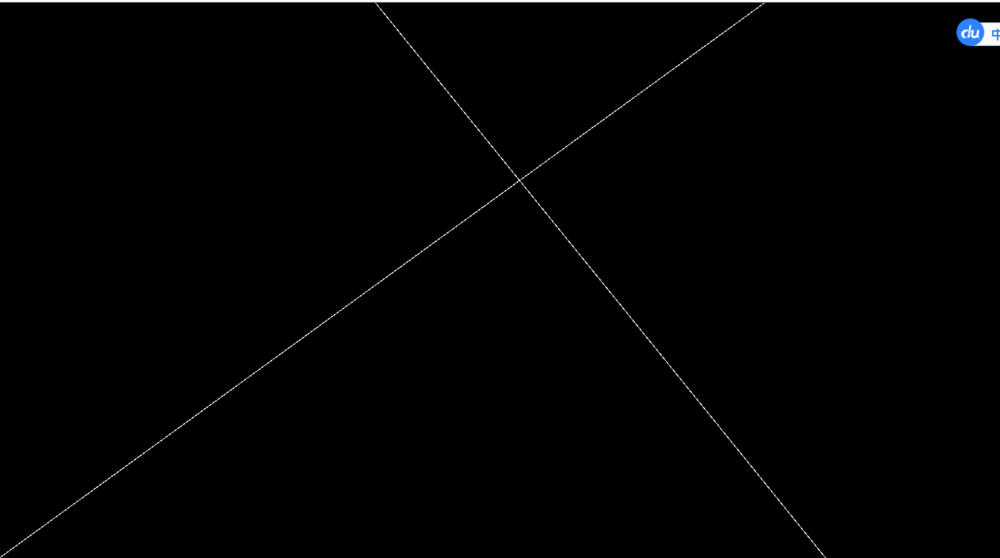
基本上表现不错，部分结果如下 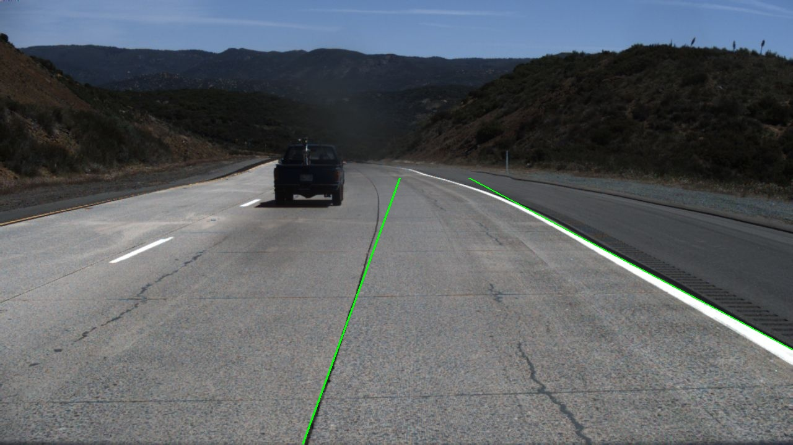 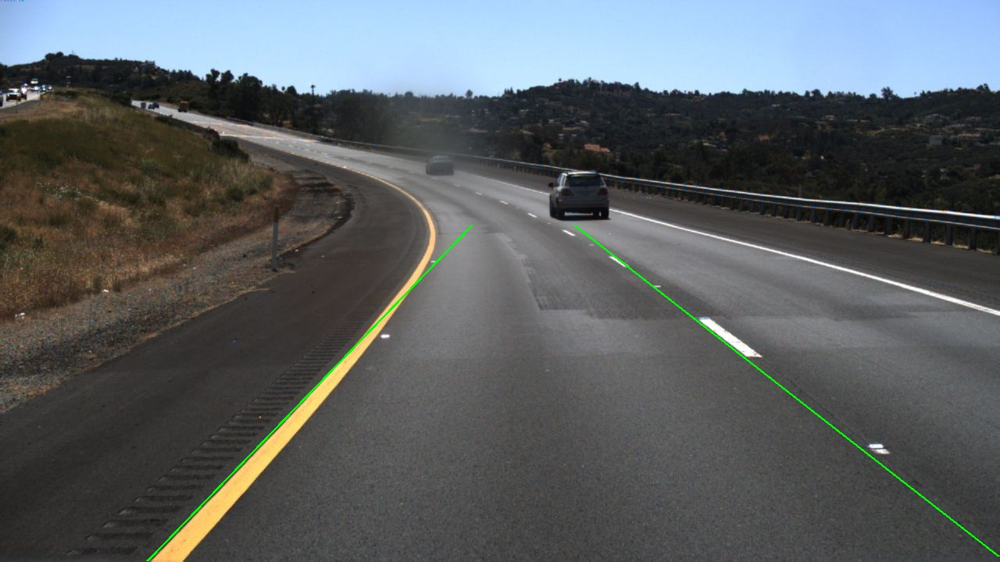 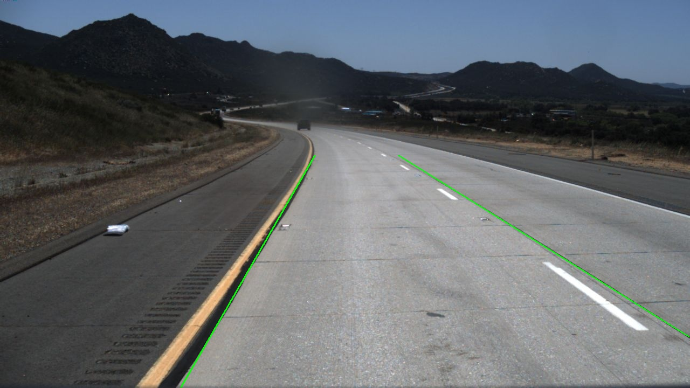 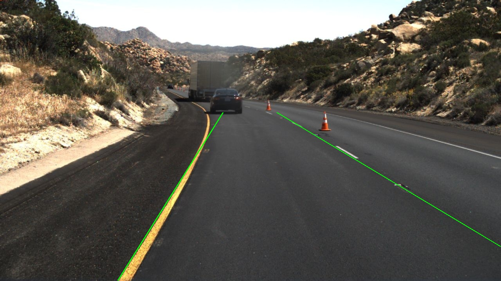 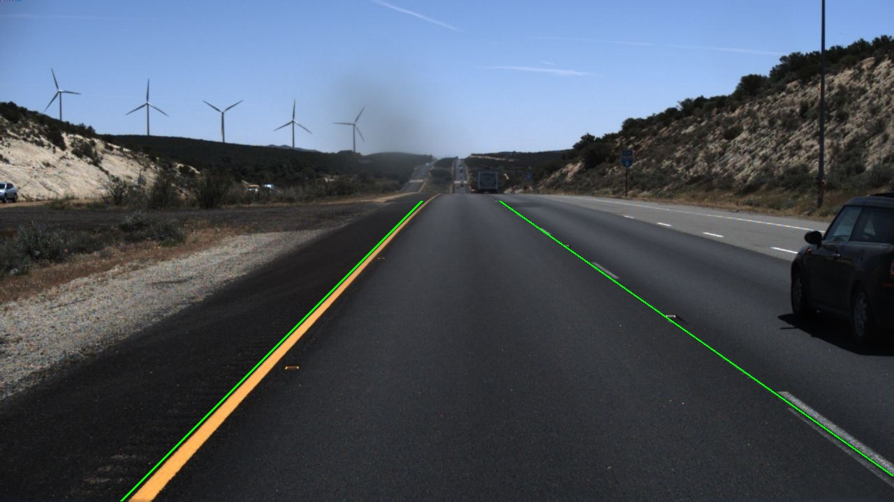 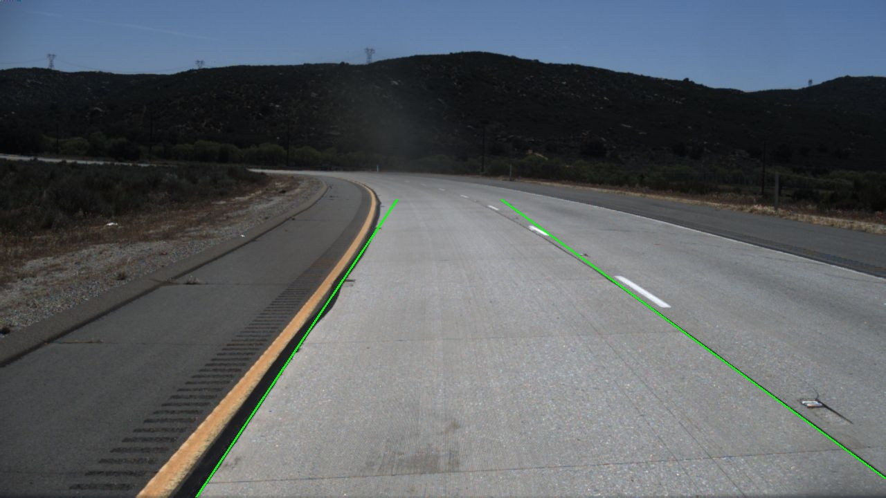
但是也有部分将道路边缘识别成车道线，这种事情发生的概率我看了一下大概每17张图片就出现2张。也展示一下.
出现的原因有1）出现大型车辆，使车道线不明显于道路两侧 ； 2）部分路段道路施工，扩宽的区域颜色对比强烈
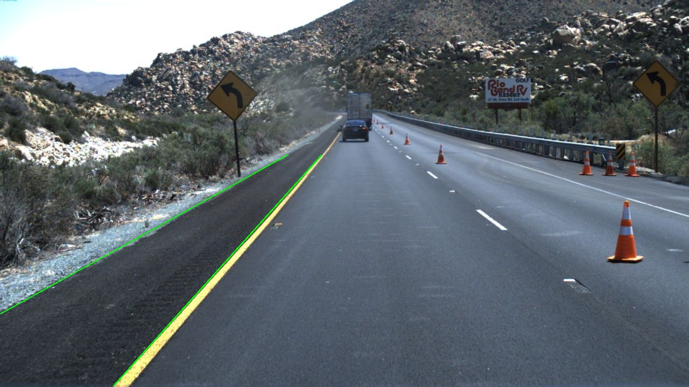
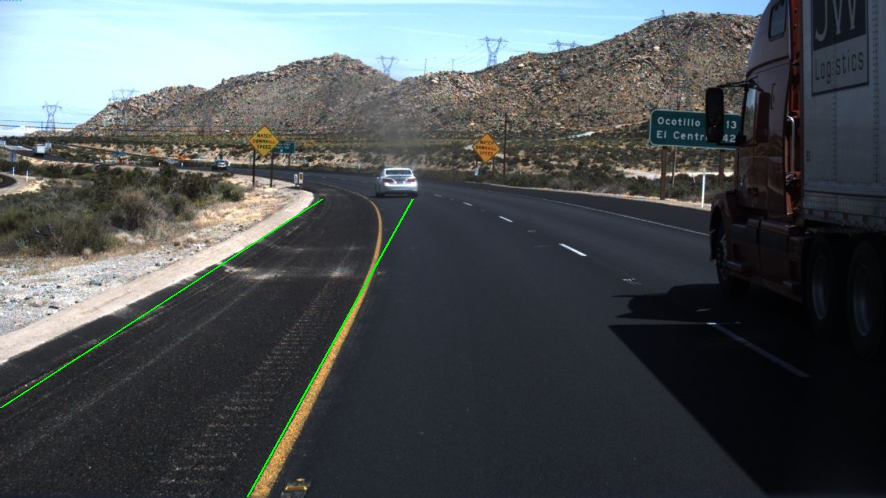
由（2）准确率可以近似认为15/17 = 88.24%